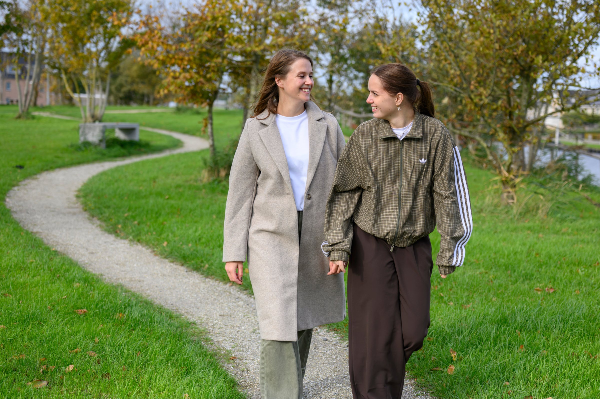

Lees eerst
Mijn verhaal · nr. 02
Waarom ik een eigen praktijk begon
Geen afrekening met de GGZ. Wel een eerlijk verhaal over wat ik zag veranderen, en waarom ik nu anders werk.
Notities van Mirjam de Leeuw over PSYCH-K, over werken met mensen en over wat ik meenam uit de GGZ.
Lees eerst
Mijn verhaal · nr. 02
Geen afrekening met de GGZ. Wel een eerlijk verhaal over wat ik zag veranderen, en waarom ik nu anders werk.

Wie schrijft hier?
Meer over Mirjam
Iets gelezen dat bleef hangen? Dan praten we er graag verder over.
In een gratis kennismaking van 30 minuten vertel je wat er speelt, en kijken we samen of mijn manier van werken bij je past.